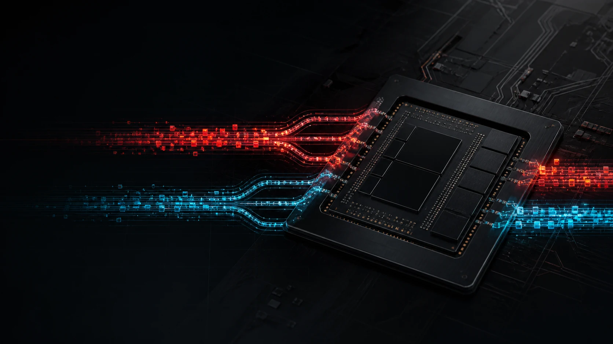

Qwen3.8-27B IU4 Kairic Edge
Specialized edge-inference artifact tuned for the Kairic serving path.
Kairic 7.15 · PromptForge enabled · exact greedy fast paths · MTP4

Crown Citadel Research Report · 22 Aug 2026
A matched EvalScope campaign on Sozo asks a practical question: how much speed can the Kairic PromptForge build gain without showing a robust quality loss?
The signal is asymmetric: serving speed separates clearly, while bounded quality differences remain small and statistically unresolved.
“Kairic Edge delivers a consistent serving-speed lead; this bounded campaign does not establish a quality winner.”
Kairic led delivered output throughput on every quality workload by 38.6–46.4%. The full 1,172-question ARC run tied exactly. Every sampled paired accuracy comparison had overlapping uncertainty and McNemar p ≥ 0.754.
Specialized edge-inference artifact tuned for the Kairic serving path.
Higher-bit dynamic quant tested as the newest upstream llama.cpp baseline.
Only ARC-Challenge was run in full. GPQA, MMLU-Pro, GSM8K, and IFEval were deliberately sampled to fit the overnight campaign window.
IFEval uses prompt-level strict compliance in this overview.
Read carefully: bars show point estimates, not certainty. The full table below includes Wilson intervals and paired outcomes.
| Dataset / scope | Kairic Edge | Dynamic V3 Q6 | Observed difference | Paired evidence |
|---|---|---|---|---|
| ARC-ChallengeFull · n=1,172 | 93.52%95% CI 91.96%–94.79% | 93.52%95% CI 91.96%–94.79% | Tie | 26 K-only · 26 Q6-onlyPaired McNemar p=1 |
| GPQA-DiamondSample · n=50 | 24.00%95% CI 14.30%–37.41% | 28.00%95% CI 17.47%–41.67% | Q6 4.00 pp | 4 K-only · 6 Q6-onlyPaired McNemar p=0.754 |
| MMLU-Pro5 × 14 subsets · n=70 | 72.86%95% CI 61.46%–81.88% | 71.43%95% CI 59.95%–80.68% | Kairic 1.43 pp | 5 K-only · 4 Q6-onlyPaired McNemar p=1 |
| GSM8KSample · n=100 | 96.00%95% CI 90.16%–98.43% | 97.00%95% CI 91.55%–98.97% | Q6 1.00 pp | 0 K-only · 1 Q6-onlyPaired McNemar p=1 |
| IFEval · Prompt strictSample · n=100 prompts | 83.00% | 83.00% | Tie | 5 K-only · 5 Q6-only |
| IFEval · Instruction strictSample · n=100 prompts | 87.83% | 88.00% | Q6 0.17 pp | Bounded descriptive comparison |
| IFEval · Prompt looseSample · n=100 prompts | 87.00% | 87.00% | Tie | 4 K-only · 4 Q6-only |
| IFEval · Instruction looseSample · n=100 prompts | 91.17% | 92.17% | Q6 1.00 pp | Bounded descriptive comparison |
ARC tied on the full set. Sampled suites have wide, overlapping intervals; one-to-four-point movements are not enough to establish a robust quality winner here.
Correct answers out of five in each subject cell.
Do not rank subjects from this panel. Five questions per subject is too small for subject-level claims; the view exists to expose where the aggregate’s single-answer difference came from.
These are end-to-end delivered output rates from the quality workloads. They include first-token delay and should not be confused with raw decode throughput.
Quality-workload requests, concurrency 1.
ARC answers average roughly five output tokens, so its 7.81 vs 5.56 tok/s rate reflects first-token delay more than sustained generation. That is precisely why the matched prompt test below reports decode, TTFT, and TPOT separately.
Eight identical prompts after one warmup.
Q6 baseline = 100. Lower is better.
| Matched metric | Kairic Edge | Dynamic V3 Q6 | Interpretation |
|---|---|---|---|
| Success | 8/8 | 8/8 | Tie |
| Decode | 20.04 tok/s | 15.19 tok/s | Kairic +31.9% |
| Delivered completion | 16.44 tok/s | 13.84 tok/s | Kairic +18.8% |
| Mean TTFT | 2,308.27 ms | 3,674.91 ms | Kairic 37.2% lower |
| Mean TPOT | 49.90 ms | 65.83 ms | Kairic 24.2% lower |
| Mean request latency | 12.371 s | 25.050 s | Not cleanly comparable |
| Completion tokens | 1,627 | 2,773 | Q6 produced 70.4% more |
Q6 generated 2,773 completion tokens versus Kairic’s 1,627—70.4% more—and one response reached the 1,024-token cap. Average latency therefore is not a clean speed comparison. Decode rate, TTFT, and TPOT are the useful matched metrics.
The locked first-sample GPQA protocol was dominated by the 1,024-token output boundary. Its score measures termination and answer-format reliability as well as reasoning.
Share of requests reaching each dataset’s configured cap.
| Dataset | Output cap | Kairic cap hits | Kairic unparsed | Q6 cap hits | Q6 unparsed |
|---|---|---|---|---|---|
| ARC-Challenge | 32 | 31 (2.6%) | 25 (2.1%) | 48 (4.1%) | 42 (3.6%) |
| GPQA-Diamond | 1,024 | 41 (82.0%) | 32 (64.0%) | 42 (84.0%) | 26 (52.0%) |
| MMLU-Pro | 1,024 | 13 (18.6%) | 7 (10.0%) | 12 (17.1%) | 9 (12.9%) |
| GSM8K | 1,024 | 4 (4.0%) | 0 (0.0%) | 2 (2.0%) | 0 (0.0%) |
| IFEval | 2,048 | 0 (0.0%) | 0 (0.0%) | 1 (1.0%) | 0 (0.0%) |
GPQA results are reported exactly under the locked protocol. Cap-hit or unparsed rows were not silently discarded, denominator-adjusted, or converted into a more flattering estimate.
This design isolates the behavior of two deployable serving stacks. It does not isolate quantization alone.
The Docker sandbox bridge was unavailable during its smoke test. HumanEval was removed from the scored campaign rather than represented as a model failure.
EvalScope source ↗
Supported dataset reference ↗
Kairic Edge model card ↗
Campaign 20260822T032300Z
EvalScope fde259d2a32ab8a4cdb3af44dc8b18f504f1e277
Deployment decision
Kairic is the clear serving-speed winner in this matched, single-user campaign. The observed quality differences—zero to four percentage points on mostly bounded samples—do not establish a robust quality winner. GPQA in particular was dominated by the locked 1,024-token termination boundary.